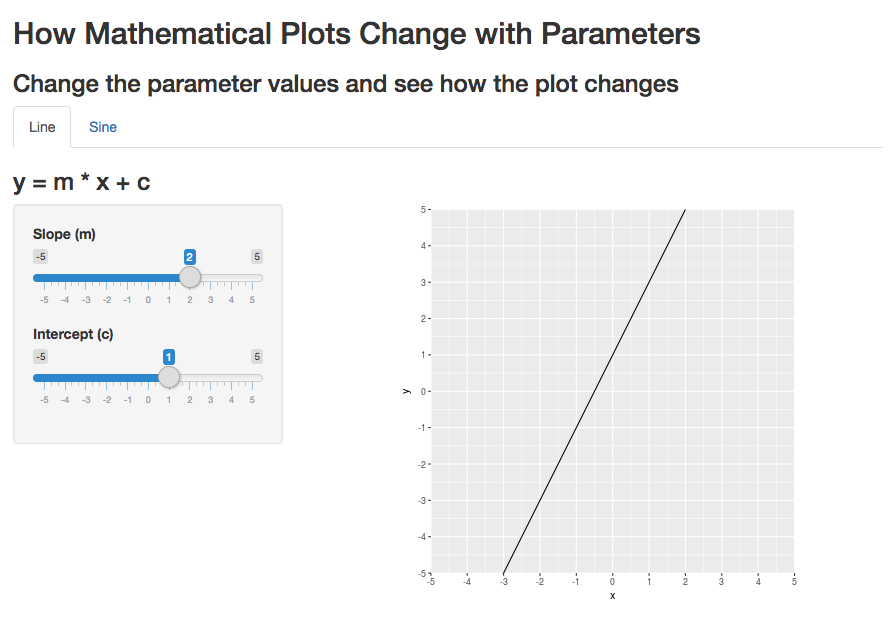
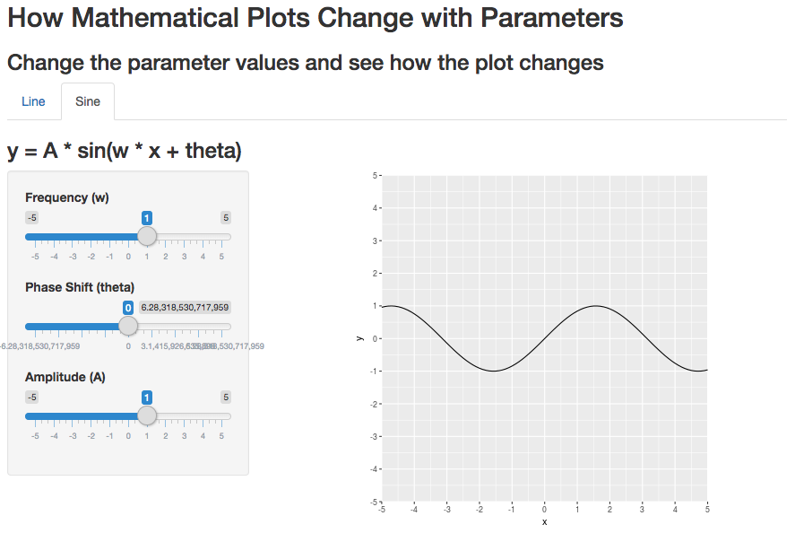
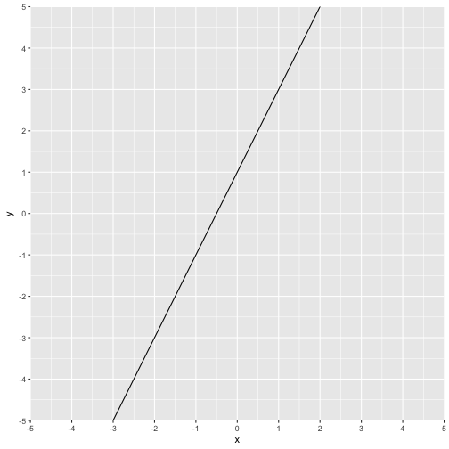

I built a shiny app to show how mathematical plots change with parameters.
Link: https://yingwaifan.shinyapps.io/Developing_Data_Product_Course_Project/

---
## The Shiny App
I built a shiny app to show how mathematical plots change with parameters.
Link: https://yingwaifan.shinyapps.io/Developing_Data_Product_Course_Project/
<img height=400px src="assets/img/line.png"></img>
The app has two tabs:

---
## Two Tabs
The app has two tabs:
1. line: show how a line changes with slope and intercept.
2. sine: show how a sine curve changes with frequency, phase shift and amplitude.
<img height=400px src="assets/img/sine.png"></img>
I put several sliderInput's in ui.R to select parameter values. Then in server.R, I use those parameter values to make mathematical plots. I fix the plot coordinates to better show changes in the plots.
For example, the following is the code to generate the line plot.
output$plot1 <- renderPlot({
x <- seq(-5, 5, length.out = 11)
y <- input$m * x + input$c
df <- data.frame(x=x, y=y)
ggplot(df, aes(x, y)) + geom_line() +
coord_fixed(1, xlim = c(-5,5), ylim = c(-5,5), expand = FALSE) +
scale_x_continuous(breaks = -5:5) +
scale_y_continuous(breaks = -5:5)
})
---
## ui.R and server.R
I put several sliderInput's in ui.R to select parameter values.
Then in server.R, I use those parameter values to make mathematical plots.
I fix the plot coordinates to better show changes in the plots.
For example, the following is the code to generate the line plot.
```{r eval=FALSE}
output$plot1 <- renderPlot({
x <- seq(-5, 5, length.out = 11)
y <- input$m * x + input$c
df <- data.frame(x=x, y=y)
ggplot(df, aes(x, y)) + geom_line() +
coord_fixed(1, xlim = c(-5,5), ylim = c(-5,5), expand = FALSE) +
scale_x_continuous(breaks = -5:5) +
scale_y_continuous(breaks = -5:5)
})
```
This is the line plot when slope (input$m) is 2 and intercept (input$c) is 1.

---
## Example Plot
This is the line plot when slope (`input$m`) is 2 and intercept (`input$c`) is 1.
```{r echo=FALSE}
library(ggplot2)
input <- list(m = 2, c = 1)
x <- seq(-5, 5, length.out = 11)
y <- input$m * x + input$c
df <- data.frame(x=x, y=y)
ggplot(df, aes(x, y)) + geom_line() +
coord_fixed(1, xlim = c(-5,5), ylim = c(-5,5), expand = FALSE) +
scale_x_continuous(breaks = -5:5) +
scale_y_continuous(breaks = -5:5)
```
| The Shiny App | 1 |
|---|---|
| Two Tabs | 2 |
| ui.R and server.R | 3 |
| Example Plot | 4 |
| Table of Contents | t |
|---|---|
| Exposé | ESC |
| Full screen slides | e |
| Presenter View | p |
| Source Files | s |
| Slide Numbers | n |
| Toggle screen blanking | b |
| Show/hide slide context | c |
| Notes | 2 |
| Help | h |